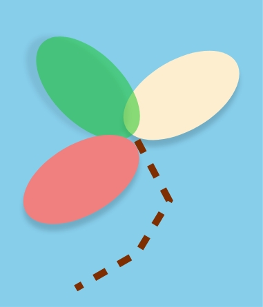

<mat-toolbar class="toolbar">
  <a class="menu-toggle" (click)="toggleMenu()">
      <i class="fas fa-bars"></i>
  </a>
  <span class="logo">
      
  </span>
  <ng-content></ng-content>
  <span style="width: 100%;text-align: right;">
   <button class="btn login-btn"  mat-button [matMenuTriggerFor]="menu"><i class="fas fa-lock"></i></button>
    <mat-menu #menu="matMenu">
      <button mat-menu-item (click)="showerr()">Login</button>
    </mat-menu>
  </span>
</mat-toolbar>
